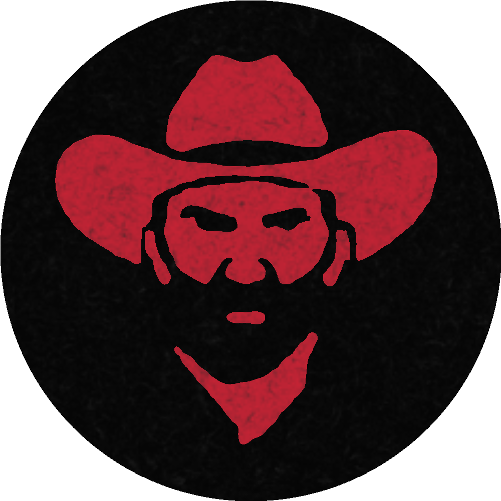

Red Dead Redemption 2 is an epic Western tale set in 1899, focusing on Arthur Morgan, a skilled outlaw and a member of the Van der Linde gang. The gang, led by the charismatic Dutch Van der Linde, is trying to survive in a rapidly changing America where outlaws are becoming a thing of the past. They’re constantly on the run from law enforcement and rival gangs, leading to intense conflicts and adventures across diverse landscapes, from snowy mountains to bustling towns and vast plains. Arthur faces personal struggles and moral dilemmas, questioning his loyalty and identity while being forced to confront the consequences of his lifestyle. As the story unfolds, Arthur and the gang grapple with loyalty, honor, and survival, highlighting the complex bonds within the gang and the harsh realities of a fading Wild West.

Arthur Morgan
Arthur Morgan is a rugged and skilled outlaw, deeply loyal to the Van der Linde gang. Haunted by a violent past, he seeks redemption while navigating a world of betrayal and chaos. Beneath his tough exterior lies introspection and compassion, showing a man torn between duty and conscience. His moral struggle defines a journey of purpose, sacrifice, and the pursuit of meaning in an unforgiving world.
John Marston
John Marston is a former outlaw striving to escape his past and build a future for his family. A capable gunslinger, he is torn between old loyalties and the desire for redemption. John's life is marked by resilience, personal loss, and moral conflict. He embodies the transition from lawlessness to responsibility, navigating a world where survival means choosing between love, loyalty, and self-preservation.
Sadie Adler
Sadie Adler begins as a grieving widow and transforms into a fierce, independent gunslinger. After her husband’s murder, she joins the Van der Linde gang, driven by vengeance and survival. Her journey is one of emotional evolution, growing from vulnerability into fearlessness. Sadie’s strength, loyalty, and refusal to be broken highlight her as a powerful and inspiring figure in a brutal, lawless world.

Micah Bell
Micah Bell is a cunning and ruthless outlaw whose self-interest drives him to manipulate those around him. A divisive force in the Van der Linde gang, he sows distrust and chaos while gaining Dutch’s favor. His ambition and disloyalty ultimately lead to betrayal and the gang’s downfall. Micah thrives on conflict and deception, proving himself a dangerous and treacherous figure throughout the story.

Dutch
Van Der Linde
Dutch Van der Linde is the charismatic leader of the gang, driven by ideals of freedom and rebellion. Though once inspiring, his vision becomes clouded by delusion and ego. As lawmen close in, Dutch’s behavior grows erratic and dangerous. He manipulates loyalty with empty promises, leading the gang into collapse. His fall from grace reveals the tragic cost of clinging to broken dreams.

Hosea Matthews
Hosea Matthews is the gang’s elder statesman, offering wisdom, strategy, and moral grounding. Acting as Arthur’s mentor, Hosea balances criminal life with charm and reason. He values planning over violence and often urges caution. Beloved and respected, his tragic death marks a turning point in the gang’s decline. Hosea's loss signifies the fading hope and humanity.
Charles Smith
Charles Smith is a noble and skilled fighter of mixed heritage, embodying strength, compassion, and resilience. A voice of reason in the Van der Linde gang, he respects nature and values life. His survival skills and loyalty make him invaluable, yet his quiet demeanor hides deep conviction. Charles stands for justice in a world of cruelty, navigating identity and honor with unshakable dignity.
Abigail And Jack
Abigail Marston is a strong-willed woman, fiercely protective of her son, Jack, and partner, John. Her love fuels her resilience in the face of hardship. Jack represents innocence and the dream of a peaceful future, far from guns and violence. Together, they symbolize sacrifice and the desire for redemption. Their story highlights the emotional cost of an outlaw life and the pursuit of hope.
Just do one thing or the other, don't try to be two people at once.
They're chasing us hard, because we represent everything that they fear.
.png)
Honors
Click me
Low Honor: Arthur embraces a ruthless outlaw life, robbing, killing, and spreading fear. People fear or avoid him, prices rise, and the narrative becomes darker. Dishonorable acts like murder, theft, and cruelty lower honor. This path leads to grim consequences and a more tragic storyline.
Click me
High Honor: Arthur acts with compassion and integrity, helping strangers and making moral choices. Townsfolk treat him kindly, stores offer discounts, and his story reflects redemption. Positive actions like donating, sparing lives, and rescuing people raise honor. It leads to a hopeful tone and better endings.